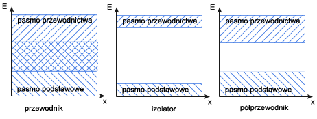

|
|||
|
| • Mechanika » Kinematyka, Dynamika, Praca, moc, energia, Grawitacja, Ruch obrotowy, Statyka, Relatywistyka • Fizyka molekularna i ciepło » Termodynamika, Gazy, Ciecze, Ciała stałe • Elektryczność i magnetyzm » Elektrostatyka, Pole elektrostatyczne, Prąd elektryczny stały, Magnetyzm, Elektromagnetyzm • Zjawiska falowe » Ruch drgający i falowy, Akustyka, Drgania i fale elektromagnetyczne, Optyka • Elementy fizyki wpółczesnej » Dualizm korpuskularno-falowy, Fizyka atomowa, Fizyka jądrowa • Astronomia » Astronomia • Zagadnienia matematyczne » Wektory, Pochodna funkcji, Logarytmy • Tablice » Jednostki wielkości fizycznych, Właściwości fizyczne, Właściwości elektromagnetyczne i falowe, Stałe fizyczne, Tablice matematyczne • O stronie » Autorzy, Bibliografia | |
|
|
Właściwości sprężyste ciał stałych
W tym rozdziale powiemy coś o sprężystości ciał stałych, a dokładniej o tzw. sprężystości postaci. O takiej sprężystości mówimy, jeżeli pewna siła działająca na ciało odkształca je (zmienia jego kształt), a gdy ta siła zniknie ciało wraca do pierwotnego stanu (kształtu). Dlatego też o sprężystości postaci mówimy jedynie omawiając ciała stałe, ponieważ zarówno ciecze jak i gazy swojego kształtu nie posiadają, a jedynie przyjmują kształt naczynia. Jednak ciecze mogą posiadać tzw. sprężystość objętości (ciała stałe też). Zjawiskiem sprężystości ciał stałych przy tzw. ściskaniu i rozciąganiu, rządzi prawo Hooke'a które mówi:
W prawie tym występuje sformułowanie "w granicach sprężystości". Oznacza ono, że ciało jest sprężyste ale w pewnych granicach. Żeby to wyjaśnić posłużę się sprężyną. Jeżeli rozciągamy sprężynę to jest i zwolnimy siłę rozciągającą, to sprężyna wróci do poprzedniej długości. Jeżeli jednak sprężynę tą rozciągniemy za bardzo, to przestanie być sprężyną, zepsuje się, nie powróci do pierwotnego kształtu. Możemy powiedzieć, że rozciągając sprężynę przekroczyliśmy granicę sprężystości. Sprężyna może się nawet zerwać przy rozciąganiu. Wtedy powiemy, że przekroczona została granica wytrzymałości materiału. Prawo Hooke'a mówi, że przyrost długości ciała jest wprost proporcjonalny do przyłożonej siły, długości początkowej, a odwrotnie proporcjonalny do pola przekroju poprzecznego. Wyobraźmy sobie stalowy pręt o długości 1m, którego pole przekroju poprzecznego wynosi 1 cm2 i zadziałajmy na niego siłą 10N. Następnie weźmy gumkę o takich samych rozmiarach i także zadziałajmy na nią taką siłą. Czy oba ciała wydłużą się tak samo? Na pewno nie. Zależy to od zastosowanego materiału, a dokładniej mówiąc od pewnej wielkości która ten materiał charakteryzuje. Mowa tu o współczynniku sprężystości, z którym zetknęliśmy się mówiąc o energii potencjalnej sprężystości. Możemy już zapisać równanie na przyrost długości rozciąganego (lub ściskanego) przedmiotu: gdzie: Δl - przyrost długości l0 - długość początkowa ciała k - współczynnik sprężystości S - pole przekroju poprzecznego ciała F - siła z jaką działamy na ciało Wiemy, że jeżeli przestaniemy działać siłą na ciało to powróci ono do pierwotnego kształtu. Musi więc istnieć jakaś siła, która ten powrót spowoduje. Stosunek wartości tej siły do powierzchni przekroju nazywamy naprężeniem wewnętrznym. Tak właśnie oznaczamy naprężenie wewnętrzne a jego jednostką jest Pascal. Odwrotność współczynnika sprężystości oznaczamy literą E i nazywamy modułem Younga: W fizyce wprowadzono jeszcze określenia mówiące o przyrostach długości ciał. Przyrost bezwzględny mówi nam o ile wydłużyło się ciało (np. o 2 cm): Δl - przyrost bezwzględny Przyrost względny natomiast informuje nas ile razy wydłużyło się ciało: Możemy teraz napisać II postać prawa Hooke'a:
Zastanówmy się jeszcze jaką wielkością jest moduł Younga. Niech przyrost długości będzie równy długości początkowej. Wówczas napięcie wewnętrzne przedstawia się wzorem: Moduł Younga to takie naprężenie wewnętrzne w rozciąganym pręcie, gdy przyrost długości równy jest długości początkowej. Siły międzycząsteczkowe w ciałach stałych
Ciała stałe (w postaci krystalicznej i bezpostaciowej) wykazują bardzo małą ściśliwość. Cząsteczki są w nich umieszczone bardzo blisko siebie i wskutek oddziaływania znacznych sił międzycząsteczkowych, ściśle ze sobą związane bez możliwości swobodnego poruszania się. W wyniku tego przeciwstawiają się one zmianom kształtu i wykazują sprężystość postaci. Siły międzycząsteczkowe, które przy zwiększaniu odległości między cząsteczkami są siłami przyciągania, a przy zmniejszaniu - siłami odpychania, powodują, że ruch cząsteczek jest nieustannie trwały j całkowicie bezwładny. Objawia się to w wykonywaniu drgań we wszystkich kierunkach. Przeprowadzane badania wykazały, że średnia energia kinetyczna materii jest tym większa, im wyższa jest temperatura bezwzględna ciała. Nosi to nazwę ruchu cieplnego.
Ze względu na olbrzymią liczbę cząsteczek i różnorodność ich stanu energetycznego nie można zmierzyć całkowitej energii wewnętrznej. W miarę wzrostu temperatury ciała stałego wzrasta jego energia, a więc i amplituda ruchu drgającego cząsteczek. W związku z tym zwiększa się średnie wychylenie od położenia równowagi, powodując odpowiednie zwiększenie wymiarów ciała. Po osiągnięciu temperatury topnienia odległości między cząsteczkami ciała stałego wzrastają tak znacznie, a działające między nimi siły tak słabną, że następuje zburzenie sieci przestrzennej i staje się możliwa wzajemna zmiana położenia cząsteczek. Proces ten nazywamy topnieniem. Krystaliczna budowa ciał stałych
Struktura olbrzymiej części większości ciał stałych charakteryzuje się tym, że tworzące je atomy są ułożone w sposób uporządkowany w regularną sieć przestrzenną, zwaną siecią krystaliczną. Większość ciał stałych występuje w postaci polikryształów. Niektóre tylko są monokryształami, tj. pojedynczymi, dużymi kryształami w kształcie symetrycznych wielościanów o płaskich ścianach i prostoliniowych krawędziach. Ich cechą charakterystyczną są określone dla każdej substancji wielkości kątów, zawartych między ścianami i krawędziami kryształu. W zależności od charakteru wzajemnych oddziaływań jąder i powłok elektronowych sąsiednich atomów sieci krystaliczne (wiązania) możemy podzielić na:
WŁAŚCIWOŚCI KRYSZTAŁÓW
Rozszerzalność cieplna ciał stałych
Jak wiemy ciała stałe, ciecze i gazy rozszerzają się pod wpływem temperatury. Jednak ciała stałe w przeciwieństwie do cieczy i gazów (które nie mają własnego kształtu), zachowując swój kształt, zmieniając pod wpływem temperatury wymiary liniowe. Do badania rozszerzalności liniowej prętów służy przyrząd zwany dylatometrem liniowym. Zbudowany jest on z podstawy z uchwytem, w którym jest sztywno zamocowany jeden z końców pręta; z czujnika zegarowego, którego trzpień pomiarowy dotyka do jego drugiego końca. Na pręt nasadza się pierścieniowe człony grzejnika elektrycznego zaopatrzone w termoelementy (służą one do pomiaru średniej temperatury pręta). Ogrzewanie powoduje wydłużanie pręta, przy czym jego niezamocowany koniec przesuwa trzpień czujnika, którego wskazania są miarą przyrostu długości. Przyrost długości ciała przy ogrzewaniu jest wprost proporcjonalny do jego długości początkowej i do przyrostu temperatury oraz zależy od rodzaju materiału. - przyrost długości - długość początkowa Rozszerzalność cieplna ciał ma wiele zastosowań w technice. W jednych przypadkach zjawisko to jest wykorzystywane, w innych unika się jego niepożądanych skutków. Rozszerzalność objętościowa ciał stałych
Ciała stałe wykazują przy ogrzewaniu również zmiany objętościowe. Prawa rządzące rozszerzalnością objętościową ciał stałych są takie same jak prawa rozszerzalności objętościowej cieczy, przy czym współczynnik rozszerzalności objętościowej jest ściśle zależny od wartości współczynnika rozszerzalności liniowej Spróbujmy wyprowadzić tą zależność. W tym celu zakładamy, że mamy do czynienia z sześcianem wykonanym z materiału izotropowego, tj. wykazującego taką samą rozszerzalność liniową we wszystkich kierunkach. - początkowa objętość Długość końcowa krawędzi sześcianu po ogrzaniu do temperatury t, wynosi: Korzystamy ze wzoru na przyrost długości ciała: A więc końcowa objętość sześcianu wynosi: Podnosimy do sześcianu wyrażenie w nawiasie: Ponieważ iloczyn ma małą wartość liczbową, to jego kwadrat i sześcian można pominąć jako bardzo małe w stosunku do jedności. A więc mamy: Porównując ten wzór z wzorem na objętość cieczy po ogrzaniu do temperatury t: otrzymujemy:
Przewodniki. Izolatory. Półprzewodniki
W atomie elektron może przyjmować tylko dozwolone wartości energii zwane poziomami energii. W krysztale w skutek oddziaływań między elektronami sąsiednich atomów poziomy energetyczne "rozmywają" się, tworząc pasma. Zgodnie z zakazem Pauliego w danym paśmie może być skończona ilość elektronów. Pasmo całkowicie zapełnione elektronami nazywamy pasmem walencyjnym (podstawowym), nie bierze ono udziału w przewodzeniu prądu. Pasmo częściowo zapełnione elektronami nazywa się pasmem przewodnictwa. Odstęp między tymi pasmami nosi nazwę pasma zabronionego lub przerwy zabronionej. Ze względu na sposób zapełniania elektronowych pasm energetycznych możemy dokonać podziału ciał stałych na przewodniki, izolatory i półprzewodniki.  W przypadku przewodnika pasma przewodnictwa i walencyjne zachodzą na siebie. Nie ma przerwy energetycznej, którą trzeba przezwyciężyć dla uwolnienia elektronu, a więc opór elektryczny przewodnika nie jest duży. W izolatorze niemal puste pasmo przewodnictwa jest oddzielone od wypełnionego pasma walencyjnego znaczną przerwą, w której nie ma poziomów dozwolonych dla elektronów. W przypadku ruchu termicznego niewiele elektronów uzyskuje wysoką energię, by przejść do pasma przewodnictwa. A więc w izolatorze jest bardzo mało elektronów swobodnych, czego wynikiem jest duży opór izolatora. W półprzewodniku szerokość pasma zabronionego jest mniejsza niż w izolatorze, co umożliwia elektronom o większej energii kinetycznej przejście z pasma podstawowego do pasma przewodnictwa. Opór półprzewodnika jest zatem znacznie mniejszy od oporu izolatora. Podział i właściwości półprzewodników
Obecnie bardzo często w nauce i technice wykorzystywane są półprzewodniki, którym stosunkowo łatwo można zwiększyć liczbę elektronów poprzez ogrzewanie, naświetlanie lub wprowadzanie domieszek. Należą do nich niektóre pierwiastki (german, selen, krzem), związki nieorganiczne (siarczek ołowiu, siarczek talu) oraz szereg związków organicznych. Podczas wzrostu temperatury półprzewodnika zwiększa się energia ruchu cieplnego elektronów, dzięki czemu niektóre z nich mogą uzyskać energię wystarczającą do przejścia do pasma przewodnictwa. Tym samym ze wzrostem temperatury zwiększa się łączna liczba elektronów swobodnych i maleje opór elektryczny półprzewodnika. Zjawiska to ma więc odwrotny charakter niż w przypadku metali, które w tych samych warunkach wykazują wzrost oporu. Nośnikami energii w półprzewodnikach są elektrony i dziury (które zachowują się jak cząstki dodatnie. Półprzewodniki możemy podzielić na:
Aby elektron mógł przedostać się z pasma walencyjnego do pasma przewodnictwa, musi uzyskać tzw. energię aktywacji, która wynosi tyle, co wyrażona w elektronowoltach szerokość pasma wzbronionego. Samoistny półprzewodnik ma energię aktywacji równą około 1,1eV. Jednak w temperaturze pokojowej średnia energia ruchu termicznego wynosi tylko 0,026eV, więc nadal tylko nieliczne elektrony o wyjątkowo wysokiej energii mogą "przeskoczyć" przerwę zabronioną i dlatego pasmo przewodnictwa w krzemie jest puste. Półprzewodnik zachowuje się wtedy jak izolator. Najszersze zastosowanie w produkcji przyrządów półprzewodnikowych znalazł krzem. Jego sieć krystaliczna jest tak zbudowana, że każdy atom, mając cztery elektrony walencyjne, ma równocześnie czterech sąsiadów rozmieszczonych w wierzchołkach czworościanu foremnego, z którymi jest powiązany za pomocą par elektronów wspólnych dla sąsiadujących atomów, tworząc tzw. wiązania kowalencyjne. Rysunek prezentuje rzut prostokątny sieci przestrzennej krzemu na płaszczyznę kartki: Kryształy półprzewodnikowe zawierające w swojej budowie atomy innych pierwiastków nazywamy półprzewodnikami domieszkowymi. Dzielą się one na: Dodanie pierwiastka z grupy V układu okresowego, np. arsen, a więc atomu posiadającego pięć elektronów walencyjnych, sprawia, że zwiększa się przewodnictwo elektronowe. Piąty elektron nie bierze udziału w tworzeniu wiązania kowalencyjnego, a więc jest słabo związany z jądrem. Znajduje się on w stanie o energii tuż poniżej pasma przewodnictwa (na które można łatwo "wskoczyć", jeśli uzyska dość energii termicznej), który nazywamy poziomem donorowym. Dodanie pierwiastka z grupy III układu okresowego powoduje zwiększenie przewodnictwa dziurowego. Wówczas jedno z wiązań jest niepełne i tworzy się poziom akceptorowy. Złącze p-n. Diody
Diodę stanowią dwa półprzewodniki, jeden typu n, drugi typu p, zetknięte ze sobą. Taki układ nazywamy złączem p-n. Gdy stykamy półprzewodniki typu p i typu n w cienkiej warstwie blisko granicy zetknięcia następuje "przechodzenie" elektronów swobodnych do dziur. W wyniku tego powstaje tzw. warstwa zaporowa o bardzo dużym oporze, bo w jej obszarze nie ma prawie nośników ładunku; obszar typu p ma niższy potencjał elektryczny od obszaru typu n. Powstała różnica potencjałów nosi nazwę bariery potencjału, gdyż zapobiega dalszemu przenoszeniu elektronów. Na rysunku powyżej pokazano dwa sposoby podłączenia diody do obwodu elektrycznego. Jeśli podłączymy diodę w taki sposób, że dodatni biegun źródła napięcia połączony jest z obszarem p, a ujemny z obszarem n, to zmniejszymy wewnętrzną różnicę potencjałów i w efekcie elektrony przyciągane przez biegun dodatni źródła będą "przeskakiwać" barierę potencjału z n do p. Mówimy wtedy, że podłączyliśmy diodę w kierunku przewodzenia. Jeśli natomiast podłączymy diodę do obwodu odwrotnie, wówczas bariera potencjału zwiększa się. Następuje spolaryzowanie diody w kierunku zaporowym. Rodzaje diod półprzewodnikowych:
Tranzystor
Tranzystor jest elementem półprzewodnikowym pozwalającym sterować przepływem prądu w obwodach elektrycznych. Najprostszym tranzystorem jest tranzystor bipolarny, zwany też warstwowym. Składa się on z trzech stykających się warstw półprzewodnikowych, kolejno n-p-n (tranzystor typu n) lub p-n-p (tranzystor typu p). Zasada działania obu tych rodzajów tranzystorów jest jednakowa, różnice występują tylko w polaryzacji zewnętrznych źródeł napięcia i kierunku przepływu prądu. Na rysunku poniżej przedstawiono obwód tranzystora typu n: Obszar typu n z lewej strony nosi nazwę emitera, czyli obszaru wprowadzającego nośniki do bazy (czyli obszaru typu p). Kolektor jest obszarem typu n z prawej strony, który zbiera nośniki. Emiter jest silnie domieszkowany, bardzo cienka baza jest lekko domieszkowana podobnie jak znacznie szerszy kolektor. Podczas pracy tranzystora jego elektrody są podłączone do źródeł napięć tak, by emiter miał potencjał ujemny, a kolektor dodatni w stosunku do bazy. Wówczas złącze na granicy emiter-baza jest spolaryzowane w kierunku przewodzenia, natomiast złącze na granicy baza-kolektor odwrotnie, czyli w kierunku zaporowym. W wyniku tego elektrony płyną swobodnie z emitera do bazy, co powoduje, że w różnych miejscach bazy występuje różna liczba elektronów; w pobliżu emitera jest ich więcej niż w pobliżu kolektora. Taki rozkład ładunku w bazie sprzyja dyfuzji elektronów w kierunku kolektora. Ze względu na małą szerokość bazy, zaledwie nieliczne elektrony wypełniają dziury w jej obszarze, natomiast znaczna większość dociera do złącza między bazą a kolektorem i może przez to złącze przeskakiwać, gdyż jest "wciągana" przez kolektor. Gdy w bazie mniejszy się liczba dziur, to w efekcie skumuluje się tam ujemny ładunek, który hamuje dopływ elektronów z emitera do bazy (i w konsekwencji do kolektora). Stosunkowo niewielki ładunek zgromadzony na bazie może zatem silnie ograniczać duży prąd z emitera do kolektora, którego przepływ mogło zapewnić zewnętrzne źródło napięcia. Reasumując, natężenia prądu płynącego przez kolektor może być regulowane przez niewielką zmianę napięcia polaryzującego złącze emiter-baza, czyli przez zmianę nawet bardzo słabego prądu płynącego przez bazę.
|
| Copyright © 2003- fizyka.kopernik.mielec.pl |